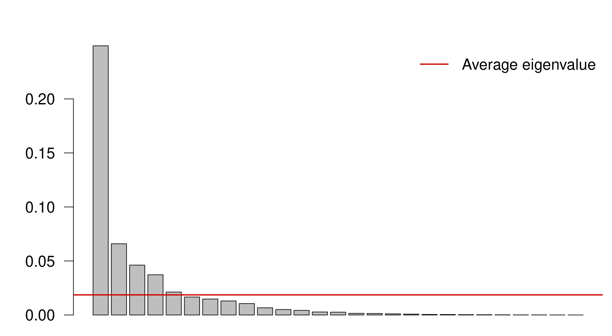
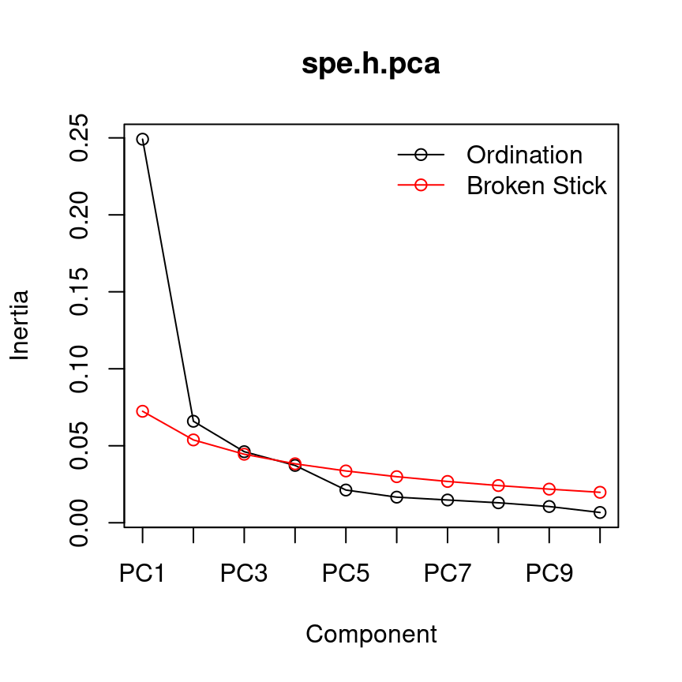
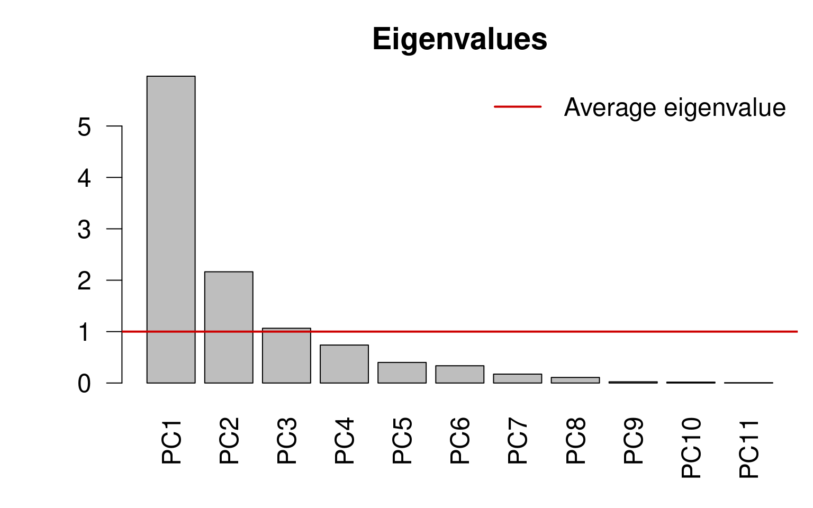
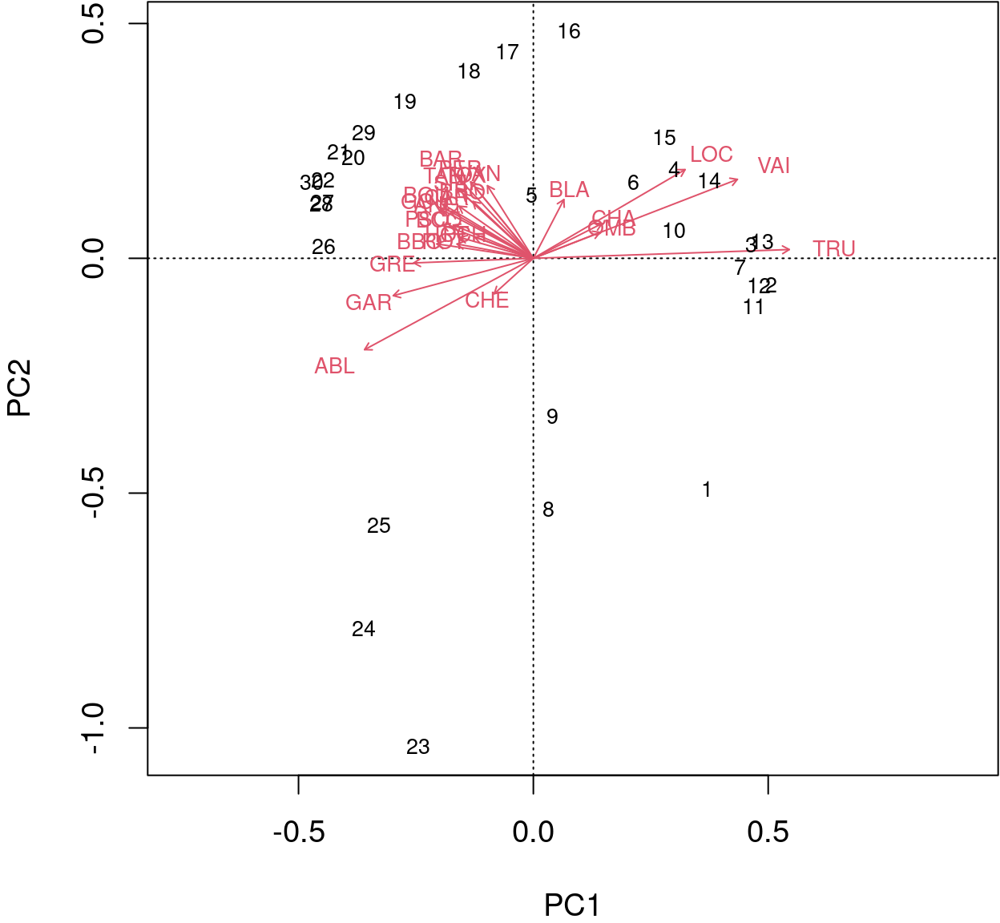
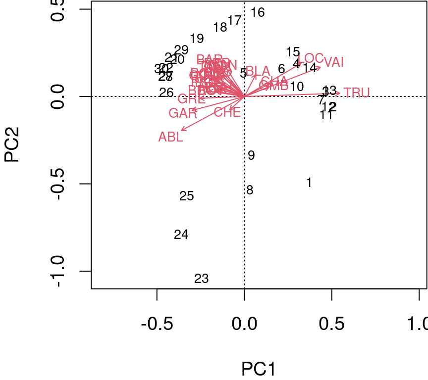
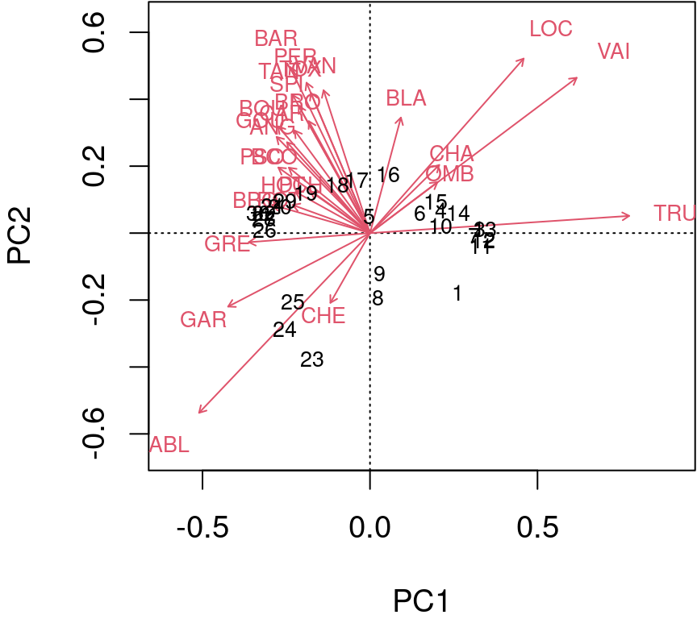
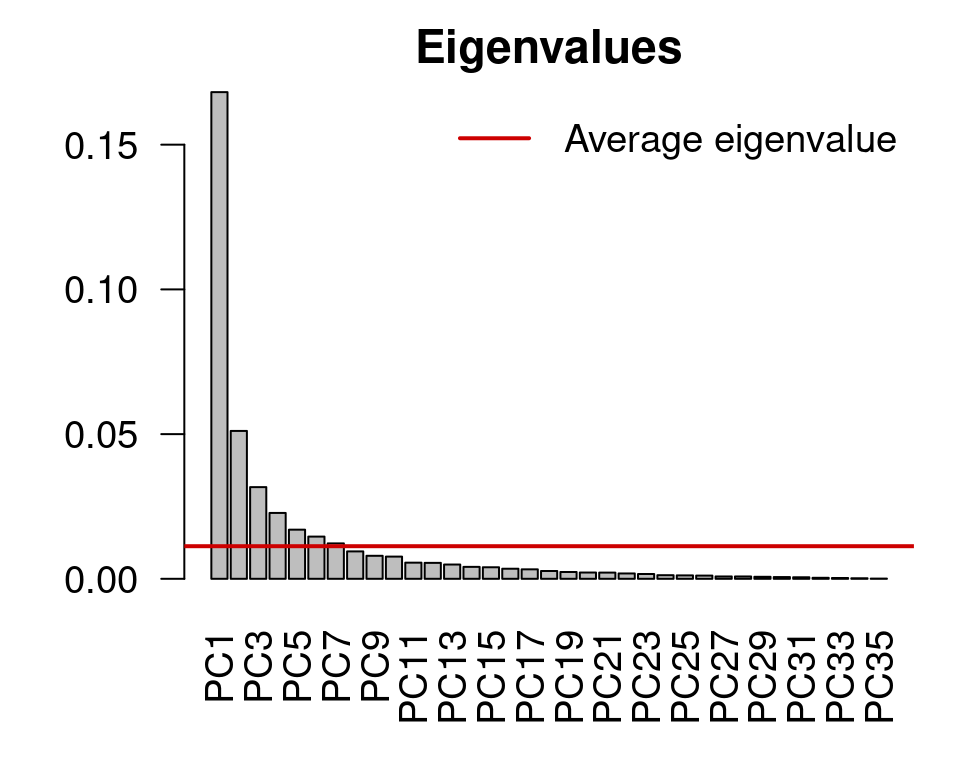
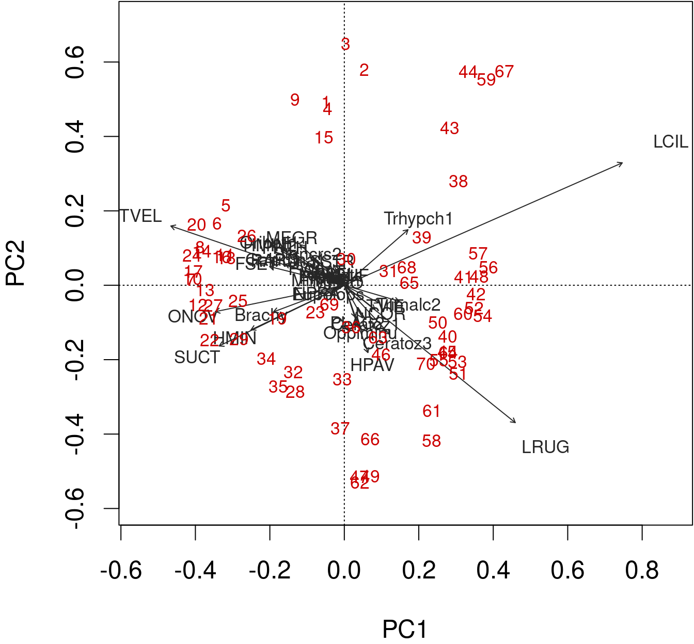

Chapter 13 Principal Component Analysis
Principal Component Analysis (PCA) is a statistical technique used to reduce the dimensionality of a dataset while retaining most of its variability. It is a linear transformation method that converts the original set of variables into a new set of linearly uncorrelated variables, called principal components (PCs), which are sorted in decreasing order of variance.
PCA was first introduced by Karl Pearson in 1901, who developed the mathematical foundation for the method. Later, Harold Hotelling (1933) provided a more detailed and modern interpretation of the PCA method.
PCA has become one of the most commonly used techniques in data analysis due to its ability to identify hidden patterns and reduce the complexity of high-dimensional data.
In essence, PCA aims to find the linear combinations of the original variables that account for the largest possible amount of variation in the dataset. The resulting principal components are orthogonal to each other, meaning that they are not correlated, and their order reflects their importance in explaining the variability of the data.
To become comfortable with PCA, we will follow with detailed examples on how to perform it step-by-step, and then we will use functions from R packages to do it.
13.1 Principal component analysis not in a nutshell
Suppose we have a dataset with \(n\) observations and \(p\) variables represented by an n x p matrix \(X\). The goal of PCA is to transform this dataset into a new set of \(p\) uncorrelated variables, called principal components (PCs), which capture the maximum amount of variance in the original data.
13.1.0.1 Load data
In this workshop, we use the data(varechem) dataset, which contains measurements of chemical properties of 18 soil samples from a field experiment. We will select the first two variables:
# Load the datasets package
library(datasets)
# Load the varechem dataset
data(varechem)
# Select data
(data <- varechem[, 1:2])## N P
## 18 19.8 42.1
## 15 13.4 39.1
## 24 20.2 67.7
## 27 20.6 60.8
## 23 23.8 54.5
## 19 22.8 40.9
## 22 26.6 36.7
## 16 24.2 31.0
## 28 29.8 73.5
## 13 28.1 40.5
## 14 21.8 38.1
## 20 26.2 61.9
## 25 22.8 50.6
## 7 30.5 24.6
## 5 33.1 22.7
## 6 19.1 26.4
## 3 31.1 32.3
## 4 18.0 64.9
## 2 22.3 47.4
## 9 15.0 48.4
## 12 16.0 32.7
## 10 14.3 62.8
## 11 16.7 55.8
## 21 21.0 26.513.1.0.2 Standardize data
We first need to standardize the data to have mean zero and unit variance:
\[ Z_{ij} = \frac{X_{ij} - \bar{X_j}}{s_j} \]
where Z is the standardized matrix, X is the original matrix, \(\bar{X_j}\) is the mean of variable j, and \(s_j\) is the standard deviation of variable j.
data_std <- scale(data)13.1.0.3 Compute the covariance matrix
Next, we compute the covariance matrix of \(Z\):
\[ C = \frac{1}{n-1}ZZ^T \]
where \(C\) is the covariance matrix and \(T\) denotes the transpose operation.
The covariance matrix is a symmetric matrix that represents the pairwise covariances between the variables. The formula for the covariance between two variables \(X\) and \(Y\) is:
\[\text{Cov}(X,Y) = \frac{1}{n-1}\sum_{i=1}^{n}(X_i - \bar{X})(Y_i - \bar{Y})\]
where \(n\) is the sample size, \(X_i\) and \(Y_i\) are the values of the variables for observation $i$, and \(\bar{X}\) and \(\bar{Y}\) are the sample means of the variables.
cov_matrix <- cov(data_std)13.1.0.4 Perform the Eigendecomposition of the covariance matrix
Then, we calculate the eigenvalues and eigenvectors of \(C\):
\[ Cv = \lambda v \]
where \(C\) is the covariance matrix, \(v\) is the eigenvector and \(\lambda\) is the corresponding eigenvalue.
eigen_decomp <- eigen(cov_matrix)
Eigenvalues <- eigen_decomp$values
Eigenvectors <- eigen_decomp$vectorsThe eigenvectors represent the directions in the \(p\)-dimensional space that capture the maximum amount of variance in the data, and the eigenvalues indicate the amount of variance captured by each eigenvector.
13.1.0.5 Project the standardized data onto the Eigenspace
Finally, we project the standardized data matrix \(Z\) onto the new basis vectors to obtain the principal components. Here, we’ll calculate the principal component scores by multiplying the standardized data by the eigenvectors of all principal components:
\[ Y = ZV \]
where \(Y\) is the transformed data matrix, and \(V\) is the matrix of eigenvectors.
F_PrComps <- data_std %*% Eigenvectors
head(F_PrComps)## [,1] [,2]
## 18 0.1894957 0.4713816
## 15 0.8662023 1.4319452
## 24 1.3494546 -0.7909067
## 27 0.9718543 -0.5156358
## 23 0.2644868 -0.6269034
## 19 -0.2510109 0.1444178The score matrix, \(F\), (object F_PrComps) allows one to rotate the new data space, so it is represented in relation to the principal components. For instance, see the figure below:
Figure 13.1: Relationship between N and P from the varechem dataset. The purple and orange diagonal lines represent the first and second principal components, respectively. Purple lines denote the residuals between the data point and the first principal component, while orange segmented lines denote the distance between points and the second principal componenet. Arrows indicate the Eigenvalues (direction) from the principal component analysis done on these two variables.
Figure 13.2: Relationship between PC1 and PC2 from the principal component analysis done on the P and N variables from the varechem dataset. The purple and orange lines represent the first and second principal components, respectively. Purple lines denote the residuals between the data point and the first principal component, while orange segmented lines denote the distance between points and the second principal componenet.
13.2 Principal component analysis using package functions
PCA can also be computed using the stats::prcomp(), stats::princomp(), vegan::rda(), and ade4::dudi.pca() functions.
In a nutshell, this is what we have done:
data(varechem)
Y <- varechem[, 1:2]
Y_std <- as.matrix(scale(Y))
Y_R <- cov(Y_std)
Eigenvalues <- eigen(Y_R)$values
Eigenvectors <- eigen(Y_R)$vectors
F_PrComps <- Y_std %*% Eigenvectors
head(F_PrComps)## [,1] [,2]
## 18 0.1894957 0.4713816
## 15 0.8662023 1.4319452
## 24 1.3494546 -0.7909067
## 27 0.9718543 -0.5156358
## 23 0.2644868 -0.6269034
## 19 -0.2510109 0.1444178How, how does it compare to stats::prcomp()?
PCA_prcomp <- prcomp(Y, center = TRUE, scale = TRUE)
# or PCA_prcomp <- prcomp(Y_std)
head(PCA_prcomp$x)## PC1 PC2
## 18 -0.1894957 -0.4713816
## 15 -0.8662023 -1.4319452
## 24 -1.3494546 0.7909067
## 27 -0.9718543 0.5156358
## 23 -0.2644868 0.6269034
## 19 0.2510109 -0.1444178And, how does it compare to stats::princomp()?
PCA_princomp <- princomp(Y_std)
head(PCA_princomp$scores)## Comp.1 Comp.2
## 18 -0.1894957 -0.4713816
## 15 -0.8662023 -1.4319452
## 24 -1.3494546 0.7909067
## 27 -0.9718543 0.5156358
## 23 -0.2644868 0.6269034
## 19 0.2510109 -0.1444178And to vegan::rda()?
PCA_vegan_rda <- rda(Y_std)
scores(PCA_vegan_rda, display = "sites", scaling = 1, choices = seq_len(PCA_vegan_rda$CA$rank),
const = sqrt(PCA_vegan_rda$tot.chi * (nrow(PCA_vegan_rda$CA$u) -
1)))[1:5, ]## PC1 PC2
## 18 -0.1894957 -0.4713816
## 15 -0.8662023 -1.4319452
## 24 -1.3494546 0.7909067
## 27 -0.9718543 0.5156358
## 23 -0.2644868 0.6269034vegan::rda() is a bit special. It uses alternative scalings. We will not cover them here, but you can study the vignette("decision-vegan").
13.3 Principal component analysis on ecological data
We have implemented PCA on a two-variables dataset, for simplicity.
Let us advance and apply it to our fish species dataset.
For this, we will use the vegan::rda() function on the Hellinger-transformed fish data and summarise the results:
spe.h.pca <- rda(spe.hel)
# summary(spe.h.pca)The first lines of summary.rda() tell us about the Total variance and Unconstrained variance in our model.
## [1] "Partitioning of variance:" " Inertia Proportion"
## [3] "Total 0.5023 1" "Unconstrained 0.5023 1"## [1] "Importance of components:"
## [2] " PC1 PC2 PC3 PC4 PC5 PC6 PC7"
## [3] "Eigenvalue 0.2491 0.06592 0.04615 0.03723 0.02125 0.01662 0.01477"
## [4] "Proportion Explained 0.4959 0.13122 0.09188 0.07412 0.04230 0.03309 0.02940"
## [5] "Cumulative Proportion 0.4959 0.62715 0.71903 0.79315 0.83544 0.86853 0.89794"
## [6] " PC14 PC15 PC16 PC17 PC18 PC19"
## [7] "Eigenvalue 0.002612 0.001505 0.001387 0.001037 0.0007815 0.0004749"
## [8] "Proportion Explained 0.005200 0.002996 0.002761 0.002065 0.0015557 0.0009454"
## [9] "Cumulative Proportion 0.987229 0.990225 0.992986 0.995051 0.9966069 0.9975523"This is followed by the Eigenvalues, and their contribution to the variance.
In fact, if we sum all our Eigenvalues, we will obtain the amount of uncostrained variance explained by the analysis!
sum(spe.h.pca$CA$eig)## [1] 0.5023429The next information is related to the scaling, to the species scores, and to the site scores.
## [1] "Eigenvalue 0.0004263 0.0002812 0.0002188 0.0001382 0.0000876"
## [2] "Proportion Explained 0.0008487 0.0005598 0.0004356 0.0002752 0.0001744"
## [3] "Cumulative Proportion 0.9984010 0.9989608 0.9993965 0.9996717 0.9998460"
## [4] " PC25 PC26 PC27"
## [5] "Proportion Explained 1.062e-04 2.938e-05 1.835e-05"
## [6] "Cumulative Proportion 1.000e+00 1.000e+00 1.000e+00"
## [7] "Scaling 2 for species and site scores"
## [8] "* Species are scaled proportional to eigenvalues"
## [9] "* Sites are unscaled: weighted dispersion equal on all dimensions"
## [10] "* General scaling constant of scores: 1.953663 "
## [11] ""
## [12] ""
## [13] "Species scores"
## [14] "BCO -0.20055 0.08332 -0.074787 -0.0504875 0.073890 0.0249842"
## [15] "PCH -0.14626 0.05268 -0.072012 -0.0432572 0.050318 0.0178776"
## [16] "GAR -0.35085 -0.09353 0.198664 0.0178669 0.023796 -0.0971362"
## [17] "BBO -0.24167 0.03598 -0.079528 -0.0339049 0.096690 0.0620979"
## [18] "ABL -0.42269 -0.22879 0.007158 0.1128353 0.006759 0.1248913"
## [19] "ANG -0.20521 0.11557 -0.072060 -0.0159902 0.072030 -0.0003801"
## [20] ""
## [21] ""
## [22] "Site scores (weighted sums of species scores)"Species refer to your descriptors (i.e. the columns in your dataset), which here are the fish species.
Scores refer to the position of every species along the principal components.
## [1] "Cumulative Proportion 1.000e+00 1.000e+00 1.000e+00"
## [2] "Scaling 2 for species and site scores"
## [3] "* Species are scaled proportional to eigenvalues"
## [4] "* Sites are unscaled: weighted dispersion equal on all dimensions"
## [5] "* General scaling constant of scores: 1.953663 "
## [6] ""
## [7] ""
## [8] "Species scores"## [1] "PCH -0.14626 0.05268 -0.072012 -0.0432572 0.050318 0.0178776"
## [2] "GAR -0.35085 -0.09353 0.198664 0.0178669 0.023796 -0.0971362"
## [3] "BBO -0.24167 0.03598 -0.079528 -0.0339049 0.096690 0.0620979"
## [4] "ABL -0.42269 -0.22879 0.007158 0.1128353 0.006759 0.1248913"
## [5] "ANG -0.20521 0.11557 -0.072060 -0.0159902 0.072030 -0.0003801"
## [6] ""
## [7] ""
## [8] "Site scores (weighted sums of species scores)"Sites represent the rows in your dataset, which here are the different sites along the Doubs river.
This information can be obtained with the score() function that we used before:
scores(spe.h.pca,
display = "species" or "sites")13.4 Condensing data with principal component analysis
Here, we have 27 principal components. However, we can apply algorithms to select the lowest number of principal components that still account for a large variance in the data.
13.4.0.1 Kaiser-Guttman criterion
We can select the principal components that capture more variance than the average explanation of all principal components. We do this by:
Extracting the Eigenvalues associated to the principal components;
Subsetting the Eigenvalues above the mean Eigenvalue:
ev <- spe.h.pca$CA$eig
# ev[ev > mean(ev)]n <- length(ev)
barplot(ev, main = "", col = "grey", las = 2)
abline(h = mean(ev), col = "red3", lwd = 2)
legend("topright", "Average eigenvalue", lwd = 2, col = "red3",
bty = "n")
13.4.0.2 Broken-stick model
The broken-stick model retains components that explain more variance than would be expected by randomly dividing the variance into \(p\) parts.
head(bstick(spe.h.pca))## PC1 PC2 PC3 PC4 PC5 PC6
## 0.07240169 0.05379640 0.04449375 0.03829199 0.03364067 0.02991961screeplot(spe.h.pca, bstick = TRUE, type = "lines")
13.5 Scaling
All that is left is to discuss scaling and to visualize our results.
Let us practice and compute a PCA on the standardized environmental variables for the same dataset.
env.pca <- rda(env.z)
# summary(env.pca, scaling = 2)Determine our subset of Eigenvalues and their corresponding Eigenvectors:
ev <- env.pca$CA$eigev[ev > mean(ev)]## PC1 PC2 PC3
## 5.968749 2.163818 1.065164
The information computed by the PCA can be represented with biplots.
We can produce a quick and dirty biplot of the PCA using the function plot() in base R.
plot(spe.h.pca)
biplot() from base R allows for a better interpretation.
biplot(spe.h.pca)
The arrows are plotted to show the directionality and angle of the descriptors in the ordination.
- Descriptors at 180 degrees of each other are negatively correlated;
- Descriptors at 90 degrees of each other have zero correlation;
- Descriptors at 0 degrees of each other are positively correlated.
Type 2 scaling (default): distances among objects are not approximations of Euclidean distances; angles between descriptor (species) vectors reflect their correlations.
biplot(spe.h.pca, scaling = 2)
Type 1 scaling: attempts to preserve the Euclidean distance (in multidimensional space) among objects (sites): the angles among descriptor (species) vector are not meaningful.
biplot(spe.h.pca, scaling = 1)
13.6 Challenge #2
Using everything you have learned, compute a PCA on the mite species abundance data
data(mite)Be ready to discuss and answer:
- What are the most relevant principal components, i.e. subset them?
- Which groups of sites can you identify?
- Which groups of species are related to these groups of sites?
Challenge 2 - Solution
Compute PCA on the Hellinger-transformed species data
mite.spe.hel <- decostand(mite, method = "hellinger")
mite.spe.h.pca <- rda(mite.spe.hel)Apply the Kaiser-Guttman criterion
ev <- mite.spe.h.pca$CA$eig
ev[ev > mean(ev)]
n <- length(ev)
barplot(ev, main = "Eigenvalues", col = "grey", las = 2)
abline(h = mean(ev), col = "red3", lwd = 2)
legend("topright", "Average eigenvalue", lwd = 2, col = "red3",
bty = "n")
biplot(mite.spe.h.pca, col = c("red3", "grey15"))